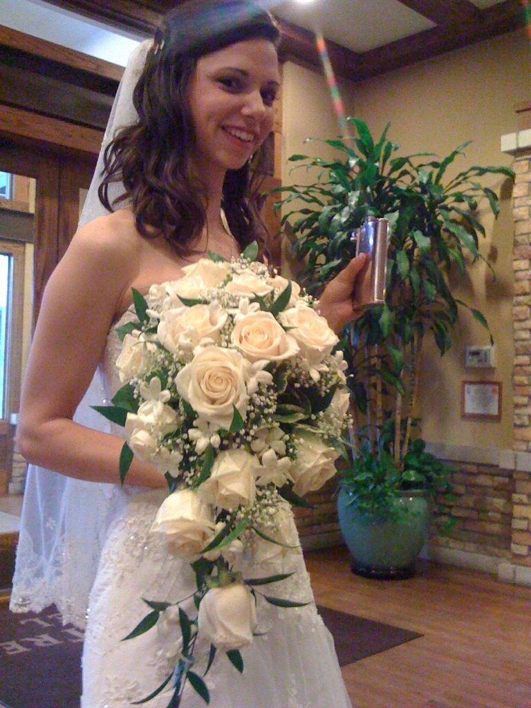
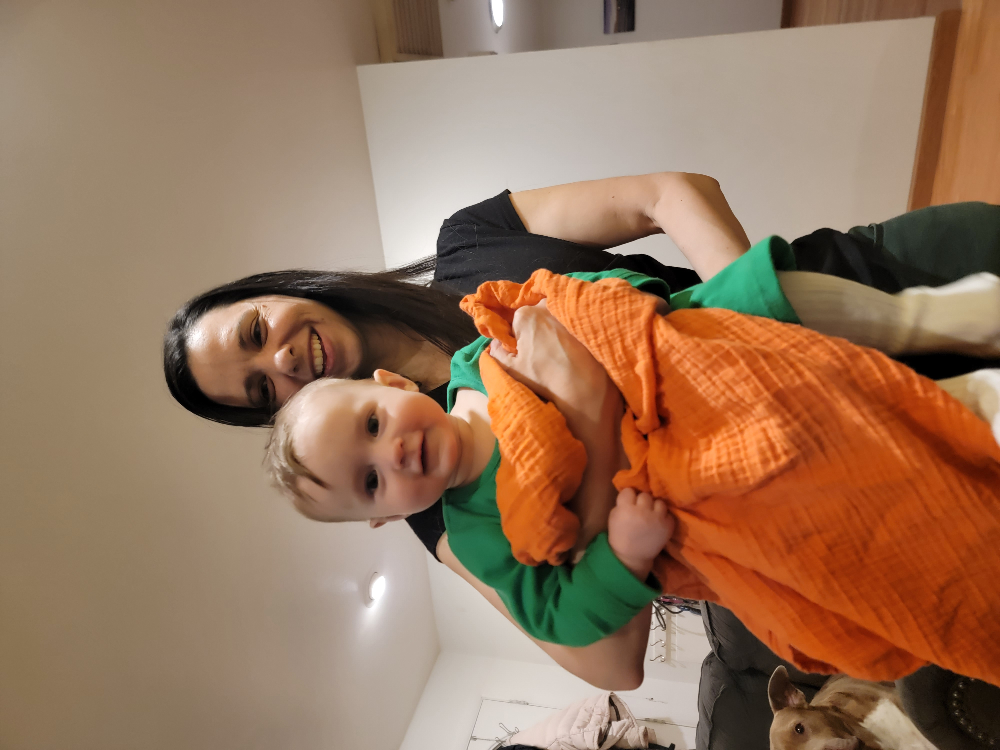

Early Foundations
Born in 1985 in Chicago's Ridgewood neighborhood, Jessica learned the value of hard work at her grandmother's Michigan rental cottages starting at age 7.
After working her way through the hospitality industry, Jessica earned her undergraduate degree while building expertise in customer service and data analysis.
The Colorado Chapter
In 2010, Jessica and her husband made a bold move to Colorado, trading Lake Michigan beaches for Rocky Mountain peaks.
In 2016, they launched Game Carriage - a mobile board game store partnering with local breweries.

Building a Future
Jessica and her husband purchased a large parcel in Fairplay, Colorado. She created multiple revenue streams by leasing to ranchers and partnering with CU Boulder's agriculture department.
Now mother to Magdalena (2022) and Veronica (2025), Jessica balances family life with her passion for the outdoors.